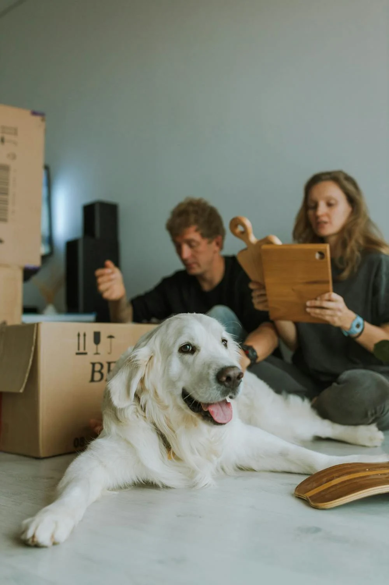

Where every pet finds a home 
They're not just animals — they can be loyal companions, best friends, and part of your family. All they need is a chance
Adopt one todayWhy Adopt From Us?
Healthy Pets
Our pets are always checked by licensed veterinarians.

Happy Homes
We help pets find the families they deserve.
Ongoing Support
After adoption, we stay with you to help.